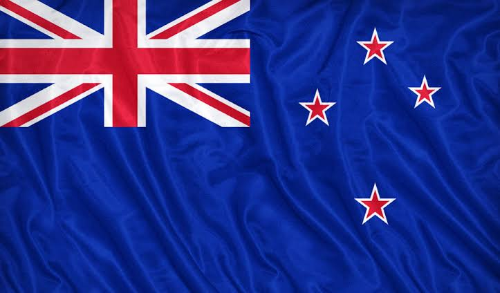

Nueva Zelanda es un país en el suroeste del océano Pacífico, que comprende dos islas principales, ambas marcadas por los volcanes y la glaciación. En la capital, Wellington, en la Isla Norte, se encuentra el extenso museo nacional Te Papa Tongarewa. El impresionante monte Victoria de Wellington, junto con Fiordland y Southern Lakes en la Isla Sur, representaron la mítica Tierra Media en la saga "El Señor de los Anillos" de Peter Jackson.

CARACTERISTICAS
Capital: Wellington, aunque Auckland es la ciudad más grande.
Idioma: Inglés y Maorí (el idioma indígena), con un creciente uso del lenguaje de señas.
Moneda: Dólar neozelandés (NZD).
Gobierno: Monarquía constitucional con una democracia parlamentaria.
Geografía: Compuesta por dos islas principales, Isla Norte y Isla Sur, famosa por su diversidad paisajística (montañas, playas, bosques y volcanes).
Clima: Templado oceánico, con veranos cálidos y inviernos suaves, especialmente en la isla norte.
Economía: Fuerte en agricultura, especialmente en lácteos, vino y turismo.
Cultura: Rica en tradiciones Maoríes, con el haka (danza tradicional) y el arte maorí siendo prominentes.
Deportes: El rugby es el deporte nacional, con los All Blacks siendo mundialmente famosos.-
Turismo: Destinos icónicos como Fiordland, Rotorua y Queenstown (famosa por actividades al aire libre y deportes de aventura).